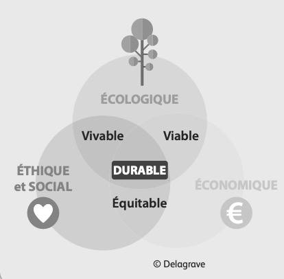

Cours standard adapté : mêmes objectifs que le programme CAP, textes courts, questions guidées, indices, corrigés, explications concrètes et audio sur les blocs.
3 séancesAudio sur les blocsRéponses guidéesExemples concrets
Mode d’emploi accessible
Lire dans l’ordre. Chaque document est suivi de ses questions. Les images aident à comprendre, mais le texte suffit pour répondre.
Utiliser les aides. Ouvrir l’indice pour démarrer, le corrigé pour vérifier, puis l’explication pour comprendre avec un exemple concret.
Séance 1 — Comprendre les ressources en eau
Objectif. Identifier les ressources en eau, leurs limites et les situations de pénurie.
Compétences :C1
Traiter l’information : repérer une information utile dans un document.
C2
Analyser une situation : comprendre le problème, les personnes concernées et les causes possibles.
C3
Mettre en relation : faire le lien entre une information du document et une connaissance du cours.
Situation — Restriction d’eau dans une boulangerie
Nora est apprentie boulangère. En période de sécheresse, la commune limite l’arrosage, le nettoyage extérieur et certains usages professionnels. Dans la boulangerie, l’équipe doit garder une hygiène stricte tout en évitant le gaspillage d’eau.
1. À partir de la situation,
1.1C2Identifier le problème principal rencontré par la boulangerie.
Indice
Chercher ce qui crée une tension entre le travail et l’environnement.
Corrigé
La boulangerie doit économiser l’eau sans diminuer l’hygiène.
Explication
Exemple : on peut réduire le nettoyage au jet, mais on ne peut pas supprimer le lavage des mains ou des surfaces alimentaires.
1.2C2Compléter la situation avec la méthode QQOQCP.
Qui ?
Quoi ?
Pourquoi agir ?
Indice
Repérer la personne, le problème et la raison de chercher une solution.
Corrigé
Qui : Nora et l’équipe. Quoi : restriction d’eau. Pourquoi agir : protéger la ressource et maintenir l’hygiène.
Explication
Exemple : écrire “sécheresse” ne suffit pas ; il faut aussi montrer ce que cela change dans le travail de Nora.
Document 1 — L’eau disponible sur Terre

Schéma simple du cycle de l’eau dans l’environnement.
L’eau recouvre une grande partie de la planète, mais l’eau douce directement disponible pour les humains est limitée. Une partie de l’eau douce est stockée dans les glaciers, les nappes souterraines ou les cours d’eau.
L’eau disponible n’est pas répartie de la même façon selon les régions du monde. Certaines zones connaissent un stress hydrique : la demande en eau devient plus forte que la quantité disponible.
2. À partir du document 1,
2.1C1Relever deux lieux où l’eau douce peut être stockée.
Indice
Chercher dans le document les endroits où l’eau douce se trouve naturellement.
Corrigé
Glaciers, nappes souterraines, cours d’eau.
Explication
Exemple : une nappe souterraine est une réserve invisible sous le sol ; elle peut alimenter des puits ou des captages.
2.2C3Expliquer ce que signifie le stress hydrique.
Indice
Relier la quantité d’eau disponible et la demande des habitants ou des activités.
Corrigé
Le stress hydrique existe quand les besoins en eau sont supérieurs à l’eau disponible.
Explication
Exemple : dans une commune en sécheresse, les habitants, l’agriculture et les entreprises demandent de l’eau, mais la ressource baisse.
Je retiens. L’eau douce utilisable est limitée. Une activité professionnelle doit donc utiliser l’eau de manière raisonnée, sans supprimer les règles d’hygiène.
Séance 2 — De l’eau potable aux eaux usées
Objectif. Distinguer eau potable, eau usée, potabilisation et épuration.
Compétences :C1
Traiter l’information : repérer une information utile dans un document.
C3
Mettre en relation : faire le lien entre une information du document et une connaissance du cours.
C4
Proposer une solution : choisir une action adaptée à une situation.
Document 2 — Le cycle domestique de l’eau
Avant d’arriver au robinet, l’eau est captée dans une ressource naturelle puis traitée pour devenir potable. Elle est ensuite distribuée aux logements et aux entreprises.
Après utilisation, l’eau devient une eau usée. Elle est collectée puis envoyée vers une station d’épuration avant de retourner dans le milieu naturel.
Captage
→
Potabilisation
→
Distribution
→
Usage
Eaux usées
→
Épuration
→
Milieu naturel
1. À partir du document 2,
1.1C1Remettre les étapes du cycle domestique dans l’ordre.
Indice
Partir de la ressource naturelle et finir après l’utilisation.
Corrigé
Captage → potabilisation → distribution → usage → collecte des eaux usées → épuration.
Explication
Exemple : l’eau du robinet n’arrive pas directement d’une rivière ; elle est contrôlée et traitée avant d’être distribuée.
1.2C3Associer chaque mot à son sens.
Élément
Réponse
Potabilisation
Épuration
Eau usée
Indice
Se demander si l’étape arrive avant ou après l’utilisation de l’eau.
Corrigé
Potabilisation : rend l’eau buvable. Épuration : nettoie l’eau après usage. Eau usée : eau rejetée après usage.
Explication
Exemple : l’eau utilisée pour laver du matériel devient une eau usée ; elle ne doit pas retourner directement dans une rivière.
Document 3 — Le prix de l’eau
La facture d’eau ne paie pas seulement l’eau consommée. Elle finance aussi le traitement, les réseaux, l’assainissement et des taxes liées à la protection de la ressource.
Réduire sa consommation peut donc diminuer la facture et préserver les ressources.
2. À partir du document 3,
2.1C1Citer deux éléments financés par la facture d’eau.
Indice
Chercher ce qui est payé en plus de l’eau elle-même.
Corrigé
Traitement, réseaux, assainissement, taxes de protection de la ressource.
Explication
Exemple : réparer une canalisation a un coût ; ce coût fait partie du service de l’eau.
2.2C5Argumenter pourquoi économiser l’eau a deux intérêts.
Indice
Penser à l’argent et à l’environnement.
Corrigé
Économiser l’eau peut réduire la facture et préserver une ressource limitée.
Explication
Exemple : fermer le robinet pendant le savonnage économise de l’eau sans empêcher une bonne hygiène.
Je retiens. La potabilisation rend l’eau consommable. L’épuration traite les eaux usées. Le service de l’eau a un coût.
Séance 3 — Préserver l’eau au quotidien
Objectif. Proposer des écogestes adaptés à une situation personnelle ou professionnelle.
Compétences :C3
Mettre en relation : faire le lien entre une information du document et une connaissance du cours.
C4
Proposer une solution : choisir une action adaptée à une situation.
C5
Argumenter : donner une idée et l’appuyer avec une raison.
Document 4 — Des gestes efficaces
Les gestes efficaces sont ceux qui gardent l’usage nécessaire tout en limitant le gaspillage : réparer une fuite, utiliser un matériel économe, fermer le robinet, récupérer l’eau quand c’est autorisé, nettoyer avec une quantité adaptée.
En milieu professionnel, les gestes doivent respecter les règles d’hygiène, de sécurité et de qualité du travail.
1. À partir du document 4,
1.1C4Choisir trois gestes adaptés à la boulangerie de Nora.
Indice
Un bon geste économise l’eau mais ne met pas l’hygiène en danger.
Corrigé
Réparer une fuite, utiliser la quantité nécessaire, garder le lavage des mains.
Explication
Exemple : économiser l’eau ne veut pas dire travailler sale ; cela veut dire utiliser la bonne quantité au bon moment.
1.2C5Rédiger une phrase de conseil pour Nora.
Indice
Écrire une action puis expliquer pourquoi elle est utile.
Corrigé
Exemple : “Ferme le robinet pendant le savonnage, car l’hygiène reste correcte et l’eau n’est pas gaspillée.”
Explication
Exemple : une phrase complète aide à montrer le lien entre le geste, la santé et l’environnement.
Je retiens. Préserver l’eau demande des gestes concrets, mais ces gestes doivent rester compatibles avec l’hygiène et la sécurité.
Bilan final — Je vérifie mes connaissances
Lexique
Ressource en eau eau disponible pour les usages humains.
Eau potable eau que l’on peut boire sans danger.
Eau usée eau rejetée après utilisation.
Potabilisation traitement qui rend l’eau potable.
Épuration traitement des eaux usées avant rejet.
Stress hydrique manque d’eau par rapport aux besoins.